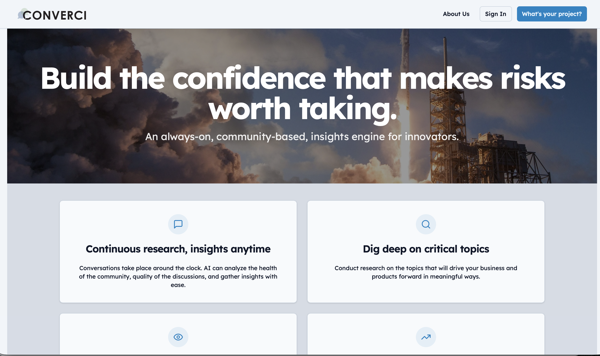
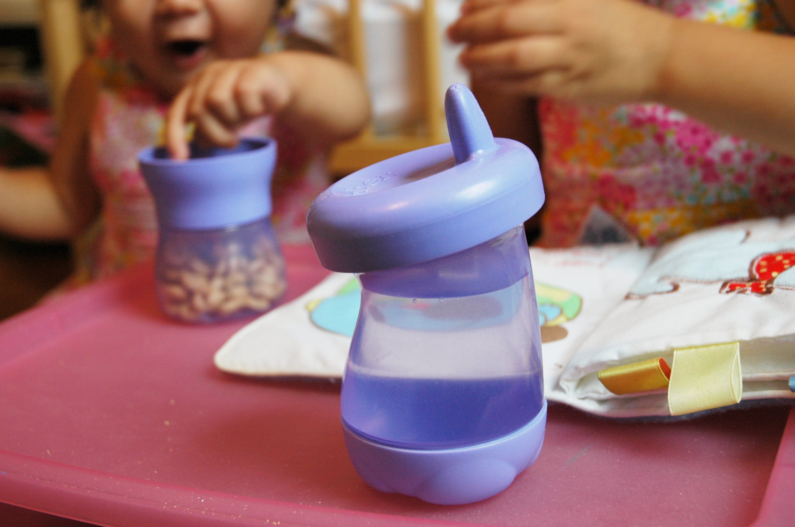

We believe growth starts and ends with understanding people — what they say, what they do, what they believe, and the why behind every decision. Armed with that understanding, we build solutions that solve real problems and surprise the people they're built for.
Innovation is not an event. It's not a project, a sprint, or a hire. It's a capability — and like any capability, it can be built, practiced, and sustained.
We work with organizations, teams, and ventures that are ready to stop doing innovation and start being innovative. If you're here, you probably already know the difference.
Selected work
What this looks like in practice.
Strategy & Identity
Purpose & Positioning
Helping a major retailer realign its strategy — facilitating workshops from c-suite to SVP level to build a shared foundation for growth.
PurposeStrategyLeadership
Read the case study →
Future Building
Groundbreaking Produce
Transforming unused retail space into innovative new experiences — validated with 90% positive feedback from real customers.
RetailConcept developmentExperience design
Read the case study →
Venture Building
Rituil
Building a yoga and meditation accessories brand from idea to launched in 9 months — brand, product, and manufacturing.
The Von Collaborative works at every level — from how an organization sets strategy to how individuals do their best work. Each layer connects, reinforces, and amplifies the others.
Organization
Innovation OS
The strategy, practice, management, and culture that make innovation a repeatable organizational capability — not a one-time effort.
Explore →
Team
Innovation in practice
Human-centered methods and tools that give teams the process, mindset, and momentum to move from challenge to solution.
See the work →
Individual
Tools for your team
Toolkits that put the methods directly in your team's hands — to run sessions, build skills, and sustain momentum between engagements.
Visit the shop →
"The same conceptual DNA runs from the organization down to the person. That's not a coincidence. It's the system."
Across retail, healthcare, consumer goods, startups, and corporate culture — the approach stays the same. Here's what it looks like in practice.
Strategy & Identity
Purpose & Positioning
Helping a major retailer realign its strategy — facilitating workshops from c-suite to SVP level to build a shared foundation for growth.
PurposeStrategyLeadership
Venture Building
Converci
Building an insights engine that makes customer conversations faster and more accessible — from idea to launch in 4 months.
VentureProductAI
Future Building
Groundbreaking Produce
Transforming unused retail space into innovative new experiences — validated by live prototypes and 90% positive customer feedback.
RetailConcept developmentPrototyping
Future Building
Gerber Sippy Cup
A science-grounded redesign partnering with the Ohio State Childhood Development Lab — resulting in an IDEA Gold design award.
Product designConsumer goodsAward-winning
Future Building
Clear Rx
Updating an iconic pharmacy bottle design to fix usability challenges for elderly users and automated filling — without losing what made it great.
Product designHealthcareUsability
Future Building
Comfort Curve
Designing the smallest sleep apnea mask on the market for Philips Respironics — drawing inspiration from running shoes to redefine how a mask fits.
Product designHealthcareMedical devices
Venture Building
Rituil
Building a yoga and meditation accessories brand from idea to launched in 9 months — brand, product development, and manufacturing in Portugal.
VentureBrandProduct development
Strategy & Identity
Embark
Reimagining a private label outdoor brand for a national retailer — building an identity that drove 15% first-year growth and challenged the nationals.
BrandStrategyRetail
Strategy & Identity
Embark
Reimagining a private label outdoor brand for a national retailer — building a clear identity that drove 15% first-year growth and challenged national brands to raise their game.
BrandStrategyRetailProduct design
01 — Challenge
Changing preferences were eroding a brand with no clear reason to exist.
Declining sales in the sporting goods category signaled that the brand had lost its connection to customers. Multiple product lines across different outdoor categories had been operating independently, without a unified story or a defined customer. The brand had no clear identity — and without one, it couldn't compete against the national brands surrounding it on the shelf.
The challenge wasn't just a visual refresh. It was a strategic one: find who this brand was truly for, build around them, and give the business a reason to exist that customers would choose.
02 — Solution
Built around the right customer, not the current assortment.
We conducted primary research to understand the customers' point of view and identify who the brand was genuinely for. From that foundation, we developed a detailed brand strategy, defined the product hierarchy, and established the positioning that would give Embark a clear, defensible space in the market.
Product categories were redeveloped under the new brand direction — bringing the strategy to life across the full assortment and giving customers a coherent reason to choose Embark over the brands they already knew.
Innovation OS elements in play
Innovation strategyInnovation culture
03 — Impact
A brand that challenged the nationals to raise their game.
First-year brand growth was 15% across all categories following the relaunch. Over 300 products were redesigned under the new brand direction — signaling a level of commitment that changed how both customers and competitors saw the category.
Helping a major retailer rethink its strategic direction through a shifting landscape — aligning leadership from the c-suite to SVP level on purpose and positioning that reflected the new reality.
PurposeStrategyLeadershipCulture
01 — Challenge
Shifting customer sentiment had outpaced the strategy.
Changing customer sentiment and internal team member confusion had created the need to rethink the company's strategy — including the purpose and positioning statements that guided it. Leadership recognized that the existing framework no longer reflected how the company operated, or what customers and team members believed about it.
Without a new foundation, alignment at every level would remain out of reach. The challenge wasn't writing new statements — it was rebuilding shared belief in what the company stood for.
02 — Solution
Discovered in workshops, built with the people closest to the work.
We conducted research with team members to uncover cultural beliefs from a representative cross-section of the organization. We then designed and facilitated workshops with c-suite leaders — working through the challenges facing the company, understanding shifting customer needs and sentiment, and developing and refining the purpose and positioning statements together.
The process didn't just produce new statements. It built the alignment and shared ownership that gives those statements staying power — because the people responsible for living them had a hand in shaping them.
The engagement produced purpose and positioning statements that reflected both leadership's aspirations and team members' lived experience. The process itself created alignment across the organization — giving leaders a shared foundation and a shared language for the conversations that had previously been hardest to have.
Building an online insights engine that makes customer conversations faster, more meaningful, and accessible to any brand — from idea to launch in 4 months.
VentureProductAICustomer insights

01 — Challenge
Customer insight was too slow, too expensive, and too complicated.
Many brands could greatly benefit from faster and more meaningful conversations with their customers. But existing solutions were overly complicated and out of reach for most teams — requiring dedicated research infrastructure, large budgets, or both.
There was a real gap in the market for a tool that made genuine customer insight accessible without the complexity — one that any innovator could use to get better answers, faster.
02 — Solution
Built with experts, tested across platforms, until it was right.
We gathered experts in coding, branding, and positioning to build the tool. The platform was built with AI, iterating across four different platforms to find the right technical foundation. Insights from past client work shaped the product at every stage — ensuring it was built around how real innovators actually work, not how we assumed they did.
Eight prototypes and mockups were built and evaluated before arriving at the final solution — each iteration sharpening both the product and the team's understanding of what it needed to be.
Converci launched as a fully functional online insights engine within 4 months of the initial idea. The discipline of testing across platforms and building multiple prototypes ensured the final product was the right solution — built to grow with the teams using it.
Transforming unused retail space in Target stores into innovative new experiences — validated through live in-store prototypes and primary research with real customers.
Unused space was becoming a missed opportunity at scale.
Target needed a plan to rethink unused space in stores — specifically decommissioned garden centers. Across the portfolio, these spaces represented significant real estate delivering no return and no meaningful experience for customers or team members.
The challenge was to find a use that would genuinely work for both — and to validate it with real people before committing capital to construction.
02 — Solution
Designed from the customer in, tested in the real world.
We evaluated the store portfolio to identify which locations warranted investment in innovative new concepts. We created concepts across many types of experiences — interviewing guests and team members in stores to gather feedback and understand unmet needs. Over 100 concepts were generated before narrowing to the most promising directions.
Live prototypes were built in-store and in an innovation lab. Primary research was then conducted in-market with actual customers and store team members — giving leadership validated evidence before any activation decision was made.
90% in favor — before a single dollar was committed to construction.
Two live prototypes were built and tested with over 40 people. Feedback was over 90% in favor of the direction — with many participants asking why it wasn't already being done. The work gave leadership a validated path forward with real customer evidence behind it.
A science-grounded redesign of Gerber's sippy cup line — partnering with the Ohio State University Childhood Development Lab to earn an IDEA Gold design award.
Product designConsumer goodsResearchAward-winning

01 — Challenge
Declining sales in a category Gerber had owned.
Gerber was seeing declining sales in their sippy cup business due to competitive pressures and challenges with the current product line. To respond effectively, the team needed more than a visual refresh — they needed a design grounded in a genuine understanding of how children develop as eaters and drinkers.
Without that scientific foundation, any redesign risked competing on aesthetics alone — a race the category's challengers were already running on price.
02 — Solution
Grounded in childhood development science.
We partnered with the Childhood Development Lab at The Ohio State University to understand how children transition from passive to active eaters and drinkers. That research foundation informed a wide exploration phase — 100 sketches across a range of directions — followed by 3D modeling and a rigorous prototyping process to finalize the design for production.
The science wasn't just a proof point. It was the design brief — shaping every decision from ergonomics to material selection to the mechanics of how a child's grip and coordination develop over time.
Innovation OS elements in play
Innovation practiceInnovation Breaks MethodStory of Growth
03 — Impact
An IDEA Gold — the design industry's highest honor.
The process produced a design that earned an IDEA Gold design award — one of the most prestigious honors in product design. The grounding in real childhood development science gave the design a functional depth that outpaced the competition and restored Gerber's authority in the category.
Updating an iconic pharmacy bottle design to fix usability challenges for elderly users and operational issues with automated filling — without losing the personalization that made it great.
Product designHealthcareUsabilityPrototyping
01 — Challenge
An iconic design had developed real-world limitations.
The original Clear Rx design made a significant impact on the pharmacy business when it launched at Target. But challenges with the design created friction for elderly users who struggled to handle it, and problems on the operations side — particularly with automated bottle filling.
The original design's strengths needed to be preserved while its real-world limitations were solved. That meant starting with understanding — not assumptions — about how people actually used it.
02 — Solution
Primary research first, redesign second.
We participated in primary research to observe how the target audience — particularly elderly users — actually used and struggled with the original design. That understanding guided an iterative redesign process, updating the bottle to fix usability challenges while maintaining the original design's signature ability to personalize medications for each individual in the household.
Over 20 prototypes were built and tested throughout the process — each one refining the design toward a solution that worked for users without sacrificing the operational improvements needed on the pharmacy side.
Innovation OS elements in play
Innovation practiceInnovation Breaks MethodStory of Growth
03 — Impact
A dramatically improved experience built on over 20 prototypes.
The redesign dramatically improved the customer experience for elderly users while resolving the operational friction on the pharmacy side. The personalization system that had made the original iconic was maintained — giving the updated design continuity with the version people already trusted.
Building a yoga and meditation accessories brand from idea to launched in 9 months — from brand strategy and product development to manufacturing partnerships across Portugal.
VentureBrandProduct development0→1
01 — Challenge
A clear vision with no roadmap to market.
The Rituil founders had a strong vision for a brand built around the rituals of yoga and meditation. But turning that vision into a launched brand required building everything from scratch — product development, brand strategy, manufacturing relationships, and an assortment that would resonate with the professional yoga community they were targeting.
Speed mattered. So did getting it right. The challenge was doing both at once — moving from vision to validated, launched brand without sacrificing quality at any stage.
02 — Solution
Built with practitioners, made with partners.
We conducted early insights sessions with professional yoga instructors to ground the brand in the reality of its core audience. We developed the brand positioning using the 12 archetypes — giving Rituil a clear, distinctive identity before a single product was finalized. Working with the founders, we defined the launch assortment and the roadmap for future development.
We traveled to factories across Portugal to identify manufacturing partners and refine product development — ensuring quality was built in, not added on. We also designed a new kneeling stool for meditation, developed as part of the launch collection.
Rituil went from initial idea to a launched brand in 9 months — including all product development. The manufacturing partnerships established across Portugal gave the brand the quality foundation it needed to compete and grow. Over 20 expert interviews fueled the products, strategy, positioning, and marketing from the start.
Designing the smallest sleep apnea mask on the market for Philips Respironics — drawing inspiration from running shoes to rethink how a mask anchors, seals, and fits.
The smallest effective mask anyone had ever built.
Philips Respironics came to us with a clear but demanding brief: develop the smallest sleep apnea mask possible while still delivering effective therapy for a wide population. Size and effectiveness had always been in tension in this category — smaller masks struggled to maintain the seal needed for therapy to work, and the tradeoffs had defined the market for years.
The conventional approach — where the seal does double duty as both anchor and contact surface — was the root of the problem. Solving for size meant questioning that assumption entirely.
02 — Solution
Inspired by running shoes. Anchored by cheekbones.
Rather than looking within the category for answers, we looked outside it — seeking inspiration from other industries where comfortable structure and support had already been solved. Running shoes became the key insight: they provide a secure, stable fit across a wide range of foot shapes by separating the functions of support and cushioning.
We applied the same logic to the mask. The novel approach used the cheekbones as natural anchors for stability — giving the mask a secure foundation without relying on the seal to hold it in place. The nose pieces were then free to focus entirely on creating an effective seal. By separating the anchor function from the seal function, we unlocked the size reduction that had previously seemed impossible.
The smallest mask on the market — from concept to prototype in 6 months.
The Comfort Curve became the smallest sleep apnea mask available at the time of its release — proving that separating anchor from seal was not just a design insight but a genuine structural breakthrough. Fifty prototypes refined the shape and design elements across the six-month development process, ensuring the final product worked across the wide population it was designed to serve.
We help companies understand their customers — and create solutions that are useable, useful, and desirable.
The Von Collaborative exists to make human-centered growth accessible to every organization. We work across industries — because the process of finding a new path to growth is not confined to one category. Our approach starts with understanding real people, and ends with solutions built to last.
How we think about growth.
Innovation is a team sport. It's not about the lone genius — it's about collective contributions. The best insights, the sharpest ideas, and the most durable solutions come from bringing the right people together around the right questions.
The best insights come from talking with real customers, not just hard data. Conversations uncover the meaning behind the numbers. We start every engagement by listening — to customers, to teams, and to the organization itself — because the answers are almost always already there.
You can't apply a standard approach to growth. A custom approach, combined with tailored methods and supported by an open mindset, creates the right environment for innovation to flourish. Innovation is not about having the right answers and proving how much you know — it's about leading with curiosity and asking the right questions.
Humans are the ultimate source of inspiration. By focusing on understanding people's needs and how they can be better met, growth becomes the natural outcome. We hold one additional belief that guides everything: technology serves people, not the other way around. The most advanced solution is only valuable when people are ready and willing to embrace it.
Founder
Chris von Dohlen
Innovation and growth leader with 20+ years of experience helping established organizations identify high-value opportunities, modernize strategic decision-making, and build new capabilities that drive long-term relevance. Former innovation leader at Target and Marvin, where he built internal innovation systems, scaled design thinking practices, and led cross-functional teams developing concepts that influenced multi-billion-dollar business categories. Creator of the Innovation Breaks toolkit and Venture Value Sprint — frameworks designed to accelerate clarity, alignment, and forward momentum.
Most organizations treat innovation like a project. We build it as a capability.
The Innovation Operating System provides the structure, process, and management support to make growth consistent, efficient, repeatable, and sustainable — by aligning innovation strategy, practice, management, and culture into one coherent system.
The four aspects
Innovation Strategy
Where are you trying to go — and does everyone know it?
The direction and intent behind all innovation activity.
Explore →
Innovation Practice
The methods that turn intent into output.
The methods and tools that turn intent into output.
Explore →
Innovation Management
Sustaining innovation beyond the first good idea.
The processes that sustain innovation over time.
Explore →
Innovation Culture
The conditions that make innovation safe, expected, and rewarded.
The conditions that make innovation safe, expected, and rewarded.
Explore →
Start here
Innovation Maturity Assessment
The Innovation Maturity Assessment helps organizations understand where they are on their innovation journey — and provides a clear pathway to making innovation an impactful, sustainable capability.
Where are you trying to go — and does everyone know it?
Innovation strategy is about making the deliberate choices that align innovation to your company's purpose, mission, and business plan. Without it, teams work hard but in different directions — and effort that doesn't add up to growth isn't innovation, it's activity.
What this means in practice
Innovation strategy is the set of deliberate choices that define what your organization is innovating toward, why, and at what level of risk and ambition. It connects your innovation portfolio to your purpose, your mission, and your business plan — ensuring that the work being done has the right scope and the right mandate to make a lasting impact.
Without a clear innovation strategy, teams innovate in isolation. Individual projects might succeed while the organization drifts — because there's no shared definition of what success looks like at the strategic level. A clear strategy lets leaders allocate time, talent, and resources with confidence, and gives teams the clarity to move fast without losing direction.
It also defines the risk profile your organization is willing to carry — how much of the portfolio is incremental improvement versus new-to-the-world exploration. Getting that balance right is one of the most important strategic decisions a growth-oriented organization can make.
The questions we ask
How does innovation help you bring your company's purpose and mission to life — and is that connection visible to the people doing the work?
What impact would you want innovation to make on your company's financial goals in the next three years?
In which areas do you need to differentiate from your competitors — and is your innovation portfolio aligned to those areas?
What would your level of investment in innovation look like — time, people, and budget — and does that reflect how much you say growth matters?
How it connects to the system
Innovation Practice
Strategy defines what to build. Practice is how you build it.
Innovation Management
Strategy sets the intent. Management sustains it over time.
Innovation Culture
Culture either supports the strategy or undermines it.
Innovation Practice gives teams the skillsets and mindsets to create new-to-the-world concepts that fuel growth — a shared toolkit, a common language, and a proven process for tackling the complex challenges that don't have obvious answers.
What this means in practice
Innovation Practice is where strategy becomes action. It equips teams with the skillsets and mindsets to create new-to-the-world concepts — not by hoping for inspiration, but by following a disciplined human-centered process that turns real customer insight into viable solutions.
At the center of our practice is the Innovation Breaks Method — 37 tools drawn from business strategy, design thinking, change management, and product management, assembled into a repeatable process for tackling volatile, uncertain, complex, and ambiguous challenges. The method gives teams a shared language and a clear path from customer discovery to prototyped concept.
We also provide toolkits that up-skill teams directly — so the capability doesn't live in a consultant, it lives in your people. When every member of a team can participate in the innovation process with confidence, the quality of the output improves and the culture starts to shift.
The questions we ask
What innovation skills does your team currently have — and what gaps slow you down when you try to move from challenge to solution?
How can you best integrate a structured innovation practice into the way your team currently works, without adding friction to what's already running well?
Is there a specific challenge in your organization where a new approach might open a solution your team hasn't been able to find?
What would you want to learn from running your first structured innovation sprint — and what would a successful outcome look like?
How it connects to the system
Innovation Strategy
Practice without strategy is activity without direction.
Innovation Management
Management determines whether practice gets the resources it needs to run.
Innovation Culture
Culture determines whether people feel safe enough to actually use the methods.
Innovation Management is about creating the right structure — the meeting cadence, decisioning frameworks, and team design — to ensure innovation efforts consistently deliver on their intended growth goals. Good ideas don't die from a lack of creativity; they die from a lack of infrastructure.
What this means in practice
Innovation Management is the organizational infrastructure that ensures innovation efforts deliver on their intended growth goals. It defines the meeting cadence, the decisioning frameworks, and the team structure that make growth possible — not just possible in theory, but executable in practice.
Most organizations can generate good ideas. Fewer can resource them, shepherd them through the organization, and bring them to market. Innovation Management closes that gap — creating clear pathways from early insight to funded initiative, and ensuring that innovation is treated as a portfolio to be actively managed rather than a project to be periodically delivered.
This dimension also determines whether innovation survives leadership changes and competing organizational priorities. Organizations that depend on a single champion are fragile. The goal of Innovation Management is to make growth structurally embedded — so it continues regardless of who is in the room.
The questions we ask
In what part of the organization should innovation leadership reside — and does that person have the authority and support to protect it?
How would you measure the impact of innovation on the organization — and how long would you give it to prove its worth before resetting expectations?
How many people need to be equipped to lead or facilitate innovation work for it to become a real organizational capability?
What could a more structured approach to innovation management unlock for your company that your current approach hasn't been able to deliver?
How it connects to the system
Innovation Strategy
Management operationalizes the strategy — turning intent into funded priorities.
Innovation Practice
Management creates the conditions for practice to run — team structure, time, and tools.
Innovation Culture
How the organization manages innovation signals what it actually values.
The conditions that make innovation safe, expected, and rewarded.
Innovation Culture is about the behaviors and beliefs — curiosity, exploration, discovery, inspiration — that ensure teams approach the hard work of innovation with confidence and conviction. You can have a great strategy and strong tools; without a culture that supports them, neither will take root.
What this means in practice
Culture is where the other three aspects of the Innovation OS either take root or get rejected. You can have the right strategy, the right methods, and the right governance — and still see innovation stall because the culture doesn't support the behaviors that make it real.
An innovative culture is built on specific behaviors and beliefs: curiosity over certainty, exploration over efficiency, discovery over defensiveness. These aren't values that get posted on a wall — they're patterns of behavior that get modeled by leaders, reinforced by systems, and practiced by teams every day.
We work with organizations to identify the gap between their stated culture and their lived culture — and to build the conditions that make innovation feel safe, expected, and worth the effort. When teams approach the hard work of innovation with confidence and conviction, the results follow.
The questions we ask
How does your organization currently define innovation — and does that definition give your team real permission to take risks and challenge what's working?
What values does your culture need to embrace more fully for innovation to become consistent — and what's getting in the way of those values taking hold?
How would you define an innovative culture for your organization specifically — not generically — and what would it look like for your people to live it?
What aspects of your current culture need to evolve to support the kind of growth you're trying to achieve — and what behaviors would signal that the shift is working?
How it connects to the system
Innovation Strategy
Culture either validates the strategy or quietly overrides it.
Innovation Practice
Culture determines whether people use the methods — or perform compliance.
Innovation Management
What gets measured and funded signals what the culture actually values.
Take this 10-question assessment to find out where you are on the innovation maturity journey and what it takes to level up. Most organizations want to innovate. Few know how mature their innovation capabilities actually are. This assessment evaluates five dimensions that separate truly innovative organizations from those still finding their footing — and gives you a personalized roadmap for what to do next.
Takes about 3 minutes.
SkillsLeader supportOrganizationStrategyCulture
The Von Collaborative
Your results are ready.
Enter your details to see where your organization lands on the Innovation Maturity Model — and get your personalized next steps.
A structured, human-centered methodology for developing new-to-the-world solutions — built for the kinds of challenges that don't have obvious answers.
37 methodsHuman-centeredVUCA challengesTeams
01 — The challenge it solves
Most teams face VUCA challenges without a reliable way to work through them.
Volatile, uncertain, complex, and ambiguous problems don't respond to standard project management or analytical frameworks. Teams either rely on gut instinct, get stuck in endless debate, or produce solutions that don't survive contact with real customers.
The Innovation Breaks Method was built for exactly these situations. It provides a structured, repeatable process that any team can follow — from the first insight to a validated concept — without requiring deep prior expertise in innovation or design.
02 — How it works
37 methods. One coherent process.
The Innovation Breaks Method brings together 37 tools drawn from business strategy, design thinking, change management, and product management. Each tool is designed to work within a specific phase of the innovation process — so teams always know what to do next and why.
The method responds to VUCA challenges with its own VUCA answer: Vision, Understanding, Clarity, and Agility. Every tool in the system serves one of these four responses — helping teams move from the fog of a complex problem to a clear, testable solution.
The toolkit includes a guide booklet that explains the approach and how to use each method, plus ready-to-use templates that let teams get started immediately — no facilitation training required.
03 — Who it's for
Any team that needs to solve a problem that doesn't have an obvious answer.
The Innovation Breaks Method is designed for teams across industries and functions — from product and strategy to operations and leadership. It's particularly valuable for organizations that want to build internal innovation capability rather than depending on external consultants to deliver it for them.
04 — In practice
Built to be used, not just read.
Every method in the toolkit is designed for active use in workshops, team sessions, and working meetings. The tools are formatted as cards so they can be spread out, shuffled, and selected based on where the team is in the process — making it easy to run a session without a facilitator present.
Workshops
Facilitated sessions for your team.
The Innovation Breaks Method is most powerful when facilitated. Von Collaborative workshops are designed to meet your team where they are — with formats that fit your schedule, your challenge, and your team's experience level.
Every session is tailored to your specific innovation challenge — whether you're rethinking a product, exploring a new market, or building your team's creative capacity.
A focused, fast-moving session ideal for teams that need to make progress on a specific challenge. Typically covers Devise through Define in one sitting.
Full-day workshop
A complete pass through the Innovation Breaks Method with deeper discovery, richer ideation, and time for prototyping. Best for cross-functional teams and complex challenges.
Multi-session program
A structured innovation engagement over multiple sessions — building team capability while working through a real strategic challenge from start to deployment.
A framework for understanding and accelerating growth at every level — combining the Hero's Journey and the Twelve Archetypes into a shared language for how teams navigate change.
Hero's Journey12 ArchetypesTeamsChangeIdentity
"We cannot become what we need to be by remaining what we are."
— Max DePree
01 — The belief behind it
Sustainable growth doesn't start with goals. It starts with identity.
Most organizations approach growth by setting targets and building plans. But the teams that grow most sustainably aren't just executing differently — they're being differently. The Story of Growth is built on a simple premise: when teams shift from asking "what do we want to achieve?" to "who do we need to become?", real change follows.
This idea is grounded in the work of James Clear on identity-based habits — and brought to life through two of the most durable frameworks in human psychology: the Hero's Journey and the Twelve Archetypes.
02 — The Hero's Journey
Reframing challenge as a purposeful path.
The Hero's Journey is one of the oldest and most universal story structures in human culture. In the context of team growth, it reframes the challenges your team faces — not as setbacks to be managed, but as necessary stages on a purposeful path.
By identifying where your team currently sits on the journey — resisting the call to change, deep in the struggle, or emerging with new strengths — you can make smarter, more courageous decisions about what comes next. The framework gives teams a shared map for navigating uncertainty together.
03 — The Twelve Archetypes
Revealing the identity behind the behavior.
Each of the Twelve Archetypes — from the Hero and the Sage to the Creator and the Caregiver — represents a distinct set of strengths, motivations, and tendencies. The toolkit guides individuals and teams to recognize their default archetypes and intentionally expand their leadership identity to meet the demands of growth.
Understanding your archetype isn't about labeling people — it's about making the invisible visible. When a team can see how each person naturally shows up, they can leverage those patterns for better collaboration, surface blind spots before they become problems, and consciously choose who they need to be for the challenge in front of them.
04 — What you'll walk away with
A shared language for navigating change together.
The Story of Growth gives teams something most frameworks don't: a common vocabulary for the human side of growth. Not just what needs to happen, but who needs to show up to make it happen.
12
archetypes in the system
2
core frameworks combined
1
shared language for growth
Workshop
Facilitated sessions for your team.
The Story of Growth is most powerful when experienced together. This workshop gives your team a shared language for where you are on the growth journey — and a clear picture of who you each need to become to get to the next stage.
Whether your team is navigating a strategic shift, a leadership transition, or simply trying to work better together, this session creates the kind of honest, purposeful conversation that most teams never make time for.
Using the Hero's Journey as a map, the team identifies where they collectively are in the growth cycle — whether they're resisting the call to change, deep in the struggle, or emerging with new strengths. This shared diagnosis is the foundation for everything that follows.
02 — Understand your default archetypes
Each team member identifies the archetypal roles they naturally play — the patterns of behavior, strength, and tendency that show up automatically, especially under pressure. Making the invisible visible is what creates real team clarity.
03 — Identify the archetypes to grow into
Based on where the team is on the growth journey, the session helps each person identify which archetype they need to lean into next — and what that shift looks like in practice for the team's specific challenge.
Before your workshop, take a few minutes to explore your default patterns as a leader and collaborator. You'll identify your primary and secondary archetypes — the tendencies you naturally rely on when navigating growth.
12 questions · about 5 minutes · no right or wrong answers. Choose what feels most true, not most aspirational.
Question 1 of 120%
Question 1
You're one step away from your results
Enter your name and email below. We'll show your archetype results instantly and send you a copy to reference before your workshop.
Required to see your results
Please enter a valid email address to continue.
We respect your privacy. Your email will only be used to send your results and occasional workshop-related updates from The Von Collaborative.
Bring this to your workshop
Your two default archetypes reveal how you naturally navigate growth. In the workshop, you'll explore whether these archetypes are helping or limiting you — and identify which archetype you need to adopt to conquer your next challenge.
Full score breakdown
Source: Carol S. Pearson, Awakening the Heroes Within & Carl Jung. Toolkit by The Von Collaborative.
Growth Tools
The tools that make growth tangible.
Four tools built to turn the Innovation OS into something your team can actually use — in workshops, in the field, and in the conversations that matter most.
For teams & workshops
Innovation Breaks
37 methods for creating new-to-the-world ideas — drawing from business strategy, design thinking, change management, and product management. Built for teams facing VUCA challenges that need real solutions, fast.
A practical system combining the Hero's Journey and the Twelve Archetypes into a shared framework for understanding and accelerating growth. Teams use it to locate themselves on their growth journey and identify who they need to become to reach the next level.
An AI-powered insights engine that makes customer conversations faster, more structured, and more accessible. Built to bridge the gap between innovation practice and real customer insight — so teams spend less time on logistics and more time on learning.
Teams that skip alignment waste time building the wrong things. The Future Focus Workshop gives your team the foundation to innovate with conviction — aligning on the customer, the need, the competition, and the opportunity before a single idea is developed.
A 2-day immersive workshop (with 2–3 weeks of prep and post-support) that moves teams from scattered effort to focused, differentiated ideas your team believes in.
Two toolkits built for teams that are ready to do the work — not just talk about it. Whether you're running a workshop, navigating a pivot, or building a culture of growth, these are the methods made tangible and immediately usable.
Toolkits
For teams
Innovation Breaks
37 methods for creating new-to-the-world ideas — drawing from business strategy, design thinking, change management, and product management. Built for teams facing VUCA challenges: volatile, uncertain, complex, and ambiguous problems that need vision, understanding, clarity, and agility in response. Includes a guide booklet and ready-to-use templates so your team can start immediately.
A practical system that combines the Hero's Journey and the Twelve Archetypes into a shared framework for understanding and accelerating growth. Teams use it to identify where they are on their growth journey, recognize the leadership strengths already in the room, and build a concrete action plan for becoming who they need to be to reach the next level. Built for any team facing change — growth, a pivot, a leadership transition, or the desire to perform at a higher level.